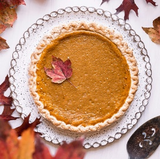
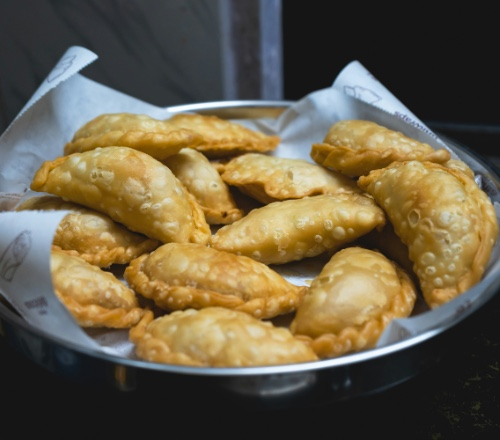
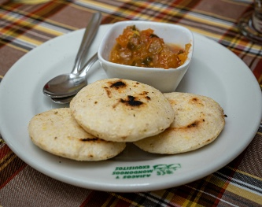

What is pumpkin pie? Well, it's a traditional American dessert that often times is seasonally associated with the fall and Thanksgiving time. It is a sweet, usually warm, and often times not pumpkin tasting pastry. Instead, it's creamy and smooth texture is dominated by its spices rather than pumpkin itself, giving it a cinnamon and nutmeg taste.

>| Ingredients | Quanity |
|---|---|
| Egg Yolks | 3 |
| Egg | 1 |
| Sweetened Condensed Milk | 1 - 14 Oz Can |
| Ground Cinnamon | 1 Teaspoon |
| Ground Ginger | 1/2 Teaspoon |
| Fine Salt | 1/2 Teaspoon |
| Fresh Grated Nutmeg | 1/4 Teaspoon |
| Chinese 5-Spice Powder | 1/8 Teaspoon |
| 9-Inch Unbaked Pie Crust | 1/2 Teaspoon |
| Pumpkin Puree | 15 Oz Can |
Pastelitos are a traditional Latin American dessert that is often times associated with Carribean culture. They are a savory pastry that is filled with a variety of different fillings, such as ground beef, chicken, ham, and much more. They are often times served as a snack are a popular stable of Latin American Bodegas. I grew up eating these, and still do, so they hold a very special place in my heart.

| Ingredients | Quanity |
|---|---|
| Goya Discos | 2 Packs / 20 Oz Each |
| Ground Beef | 1 Pound |
| Shredded Cheddar Cheese | 12 Oz |
| Water | 1/2 Cup |
| Canola Oil | 2-4 Cups |
Arepas are another traditional Latin American dish. They are very simple and convient food to make that always seems to hit the spot. They are basically a fried patty made with a traditional corn dough. They can be filled with different fillings such as cheese or meat, but can likewise be served by themselves or with a side.

| Ingredients | Quanity |
|---|---|
| Lukewarm Water | 2 & 1/2 Cups |
| Salt | 1 Teaspoon |
| Precooked White Cornmeal | 2 Cups |
| Vegetable Oil | 1/4 Cup |